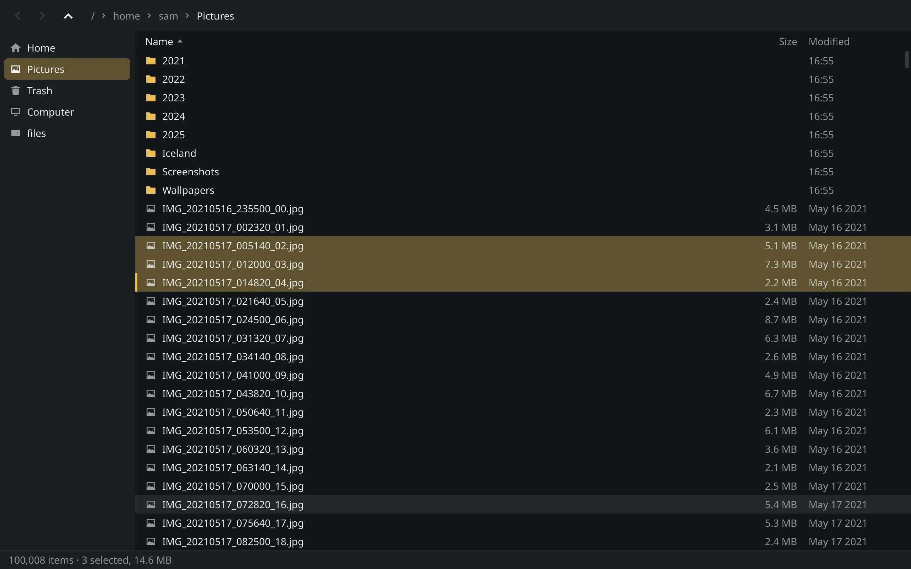
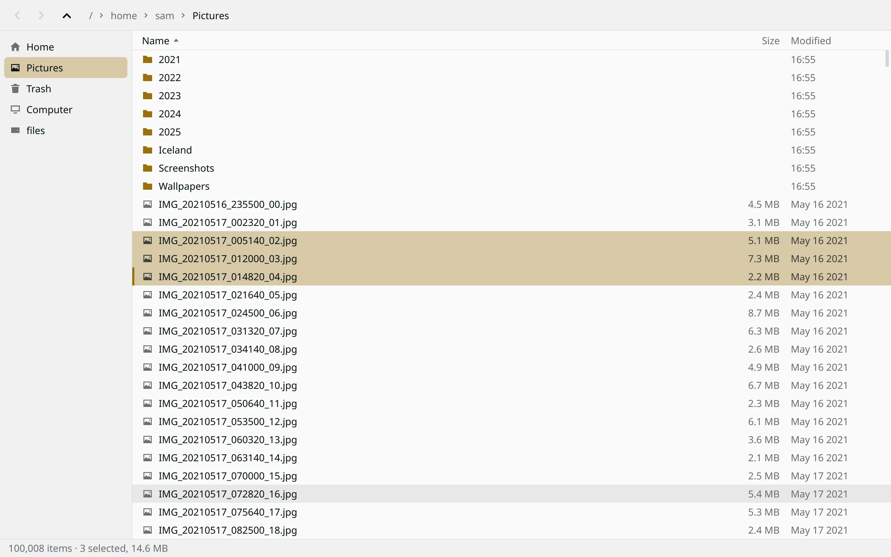
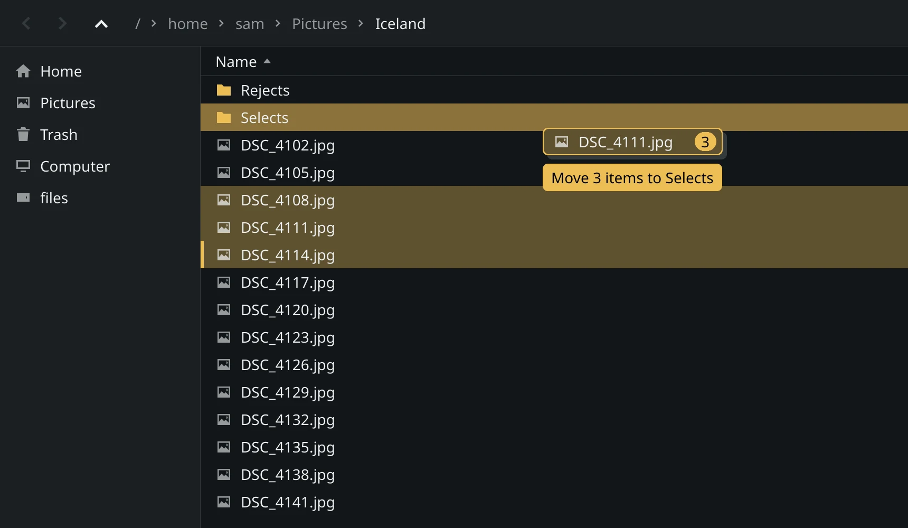
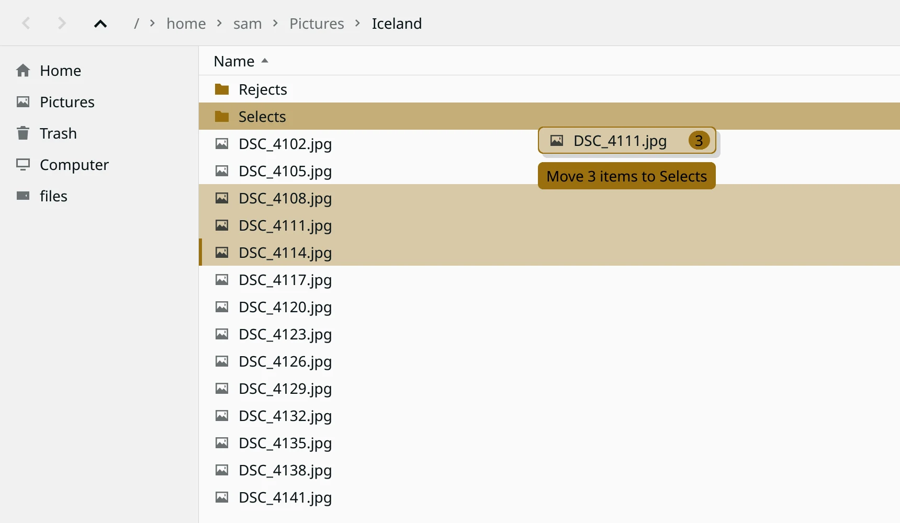
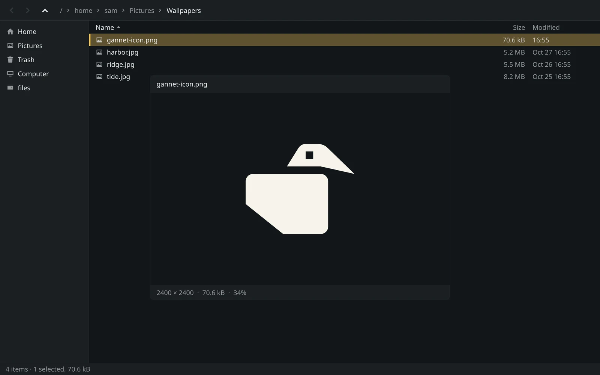
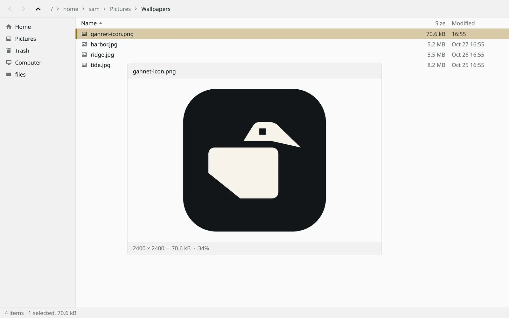

A file manager for Wayland
A hundred thousand files. Twenty-eight milliseconds.
Gannet is written in Rust and draws on the CPU, with no toolkit and no GPU. Your biggest folder is sorted and on screen before your finger has left the key.


The gap is big enough to feel.
The same folder of 100,000 files, in the same harness, against GNOME's file manager.
First window on screen
Finished loading the folder
Memory while holding it
Gannet 0.1.8 and Nautilus 51.1 on one desktop, in a headless sway with software rendering, on 100,000 empty files. Nautilus normally draws with the GPU, so its times here may be pessimistic. The benchmark is in the repo: bench/run.py.
Know what a drop will do before you let go.
The label under the pointer says it in words. A plain drag moves on the same disk and copies to another. Ctrl copies, Shift moves, and Ctrl+Shift makes a link. Changed your mind? Escape cancels and Ctrl+Z undoes.
It works between Gannet windows and with other apps. Gannet never deletes anything because of what another app reports back.




Press Space. Previews run in a sandbox.
Space previews any file in a window of its own: images and animations, video and sound, text and Markdown, and what a folder holds. The arrow keys go to the next file, and plus and minus zoom.
Decoding a file you downloaded shouldn't put your home folder at risk. Each image or text file is read in its own process under a seccomp sandbox, with no network and no other files. Video and sound play in a bubblewrap jail with no home folder and no network.
Your hands can stay on the keyboard.
Start typing a name and you're there. Everything else is a key or two away, including the things most file managers bury in a menu.
- Filter the folder
- Ctrl+F or /
- Type a path
- Ctrl+L
- Preview
- Space
- Jump to a place in the sidebar
- Alt+1 to Alt+9
- Sort by name, size, modified
- Ctrl+1, 2, 3
- Copy the path as text
- Ctrl+Shift+C
- Undo a rename, move or Trash
- Ctrl+Z
- Stop the newest operation
- Ctrl+.
It matches your desktop.
Gannet uses the light or dark preference from your GTK settings or gsettings, with a built-in palette, and checks again whenever its window regains focus.
What it doesn't do yet.
Gannet is young. If one of these is a dealbreaker, it's better to know now.
- Tabs
- Screen readers and other accessibility tools
- Input methods and compose
- Right-to-left text
- Keeping ownership and hard links on copies
- X11
Build it from source with Rust. It needs libxkbcommon to link, and at run time fontconfig for fonts, xdg-open for opening files, and libmpv and bubblewrap for video and sound previews.
Get Gannet 0.1.12git clone https://github.com/aliasproject/gannet cd gannet cargo build --release -p gannet ./target/release/gannet